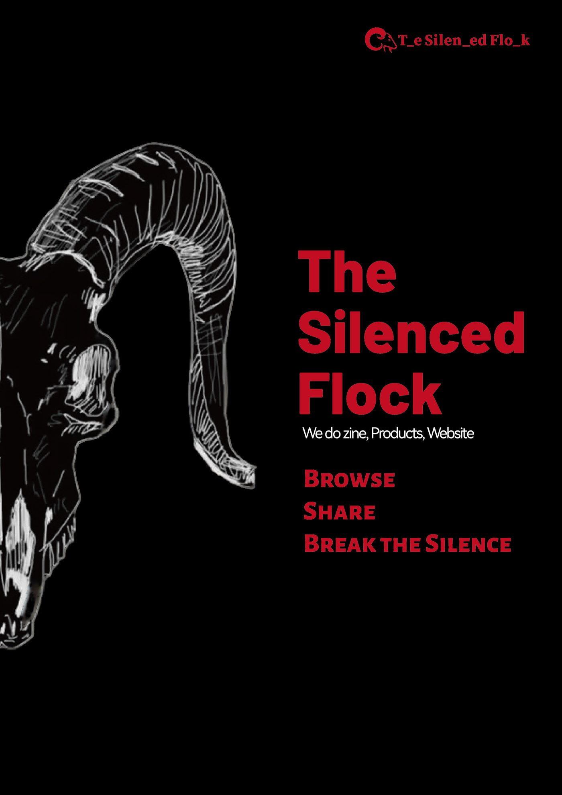
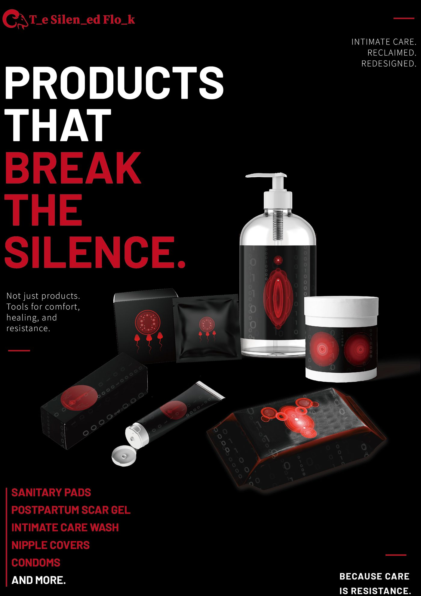
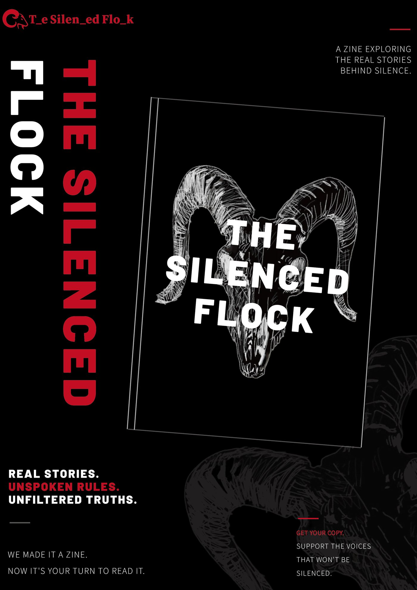
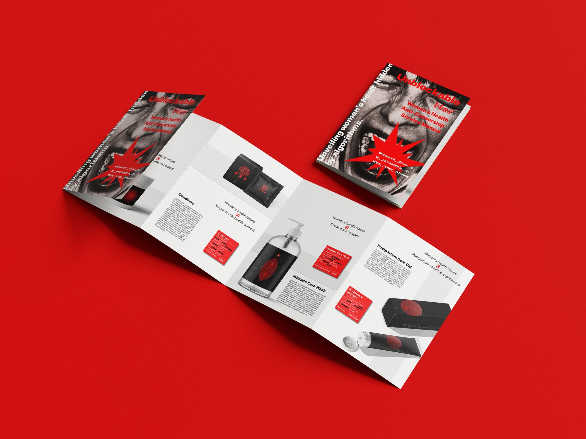
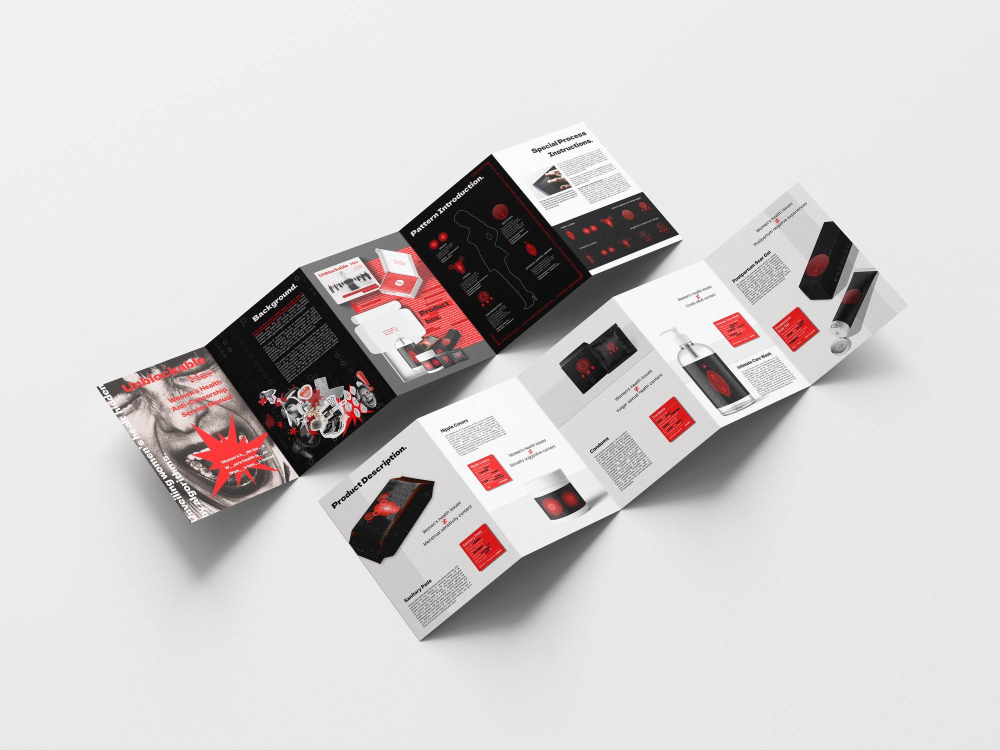
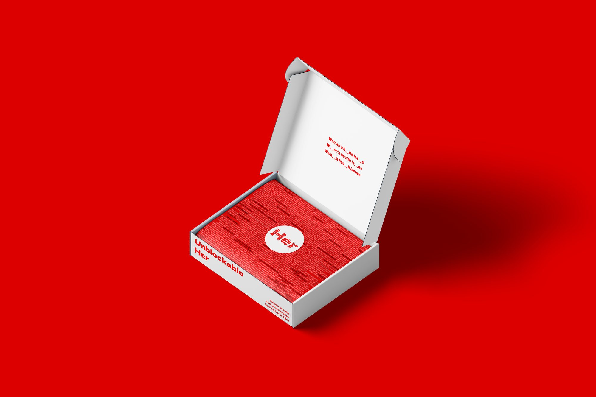
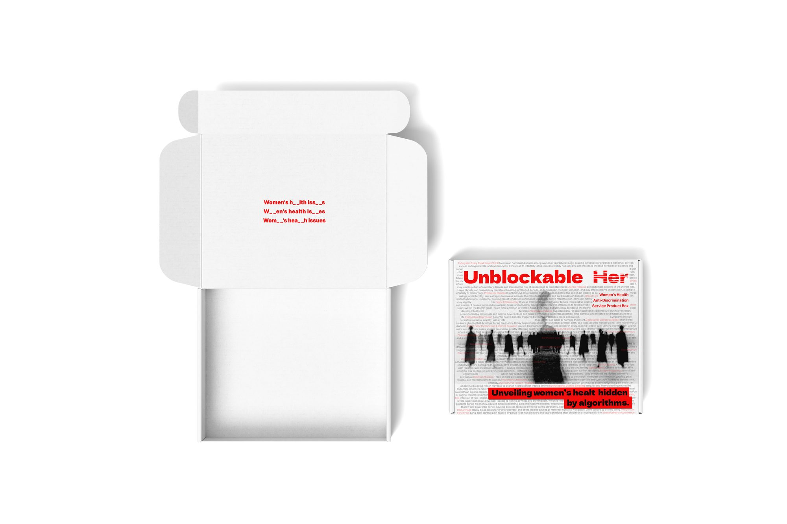
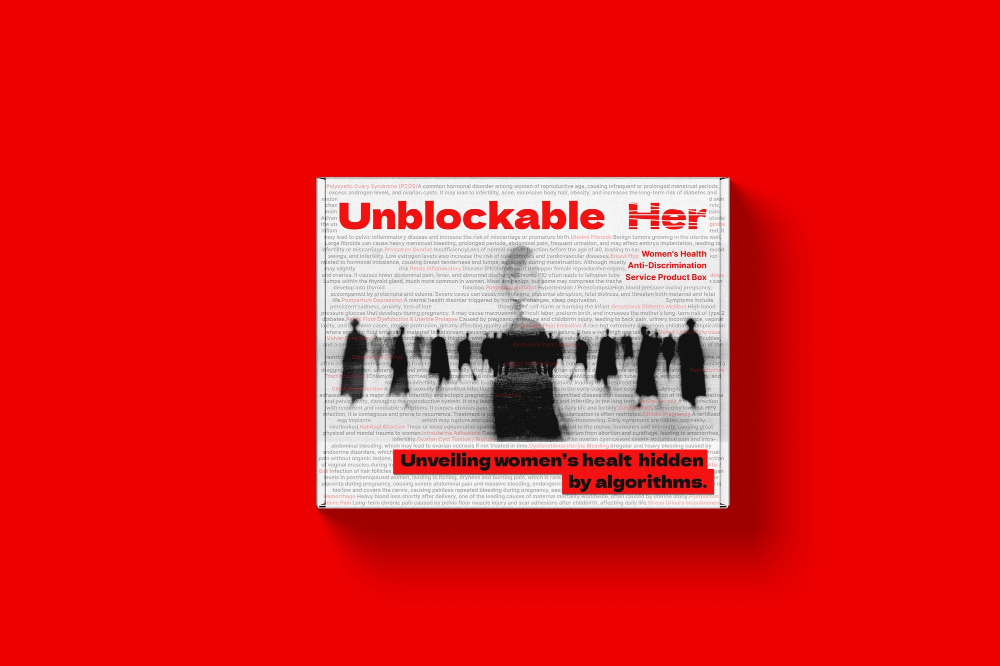

Offline campaign posters
Visual interventions in public space



Offline products and campaign materials
Physical outputs for public visibility





Offline publicity
Let silence be seen
We don't just stay on the screen.
“The Silent Flock” is not only a digital media project, but also a public conversation that takes to the streets. We believe that when the algorithm chooses to “invisible” certain topics, the offline space can become another possibility for communication.
What we did
Independent magazine “The Silent Flock”
We produced a small art publication (zine) that included women’s health topics that were restricted by the platform. The magazine itself doesn’t rely on algorithmic distribution, nor is it filtered by keywords — it just relies on the people who flip through it.
Women’s health-themed products
We designed and produced a range of daily products directly related to women’s health, such as:
- Nipple Covers
- Sanitary Pads
These products are distributed for free during offline promotions, with the goal of bringing women’s health topics into the most everyday scenarios, instead of being locked inside a “failed review” prompt box.
Promotional posters
We designed a series of posters for posting in offline spaces such as campuses, communities, and cafes.
Why promote offline?
Because the online space is not neutral.
As we show in the “cases” section of the website:
- Women’s health-related content is restricted, abbreviated or deleted on multiple platforms;
- Men’s health topics don’t have nearly the same constraints;
- Some brands have even been denied advertising for using words like “vagina” and “menstrual cycle.”
In this environment, offline promotion is not an alternative, but a necessary supplement. It does not rely on likes, is not buried by algorithms, and does not need to bypass keyword censorship.
Our position
These products and posters are not commercial activities, but communication activities.
We hope that through a touchable object and a piece of paper posted on the wall, people passing by will realize:
The content you see has been filtered.
Just because you don’t see something doesn’t mean it’s not important.